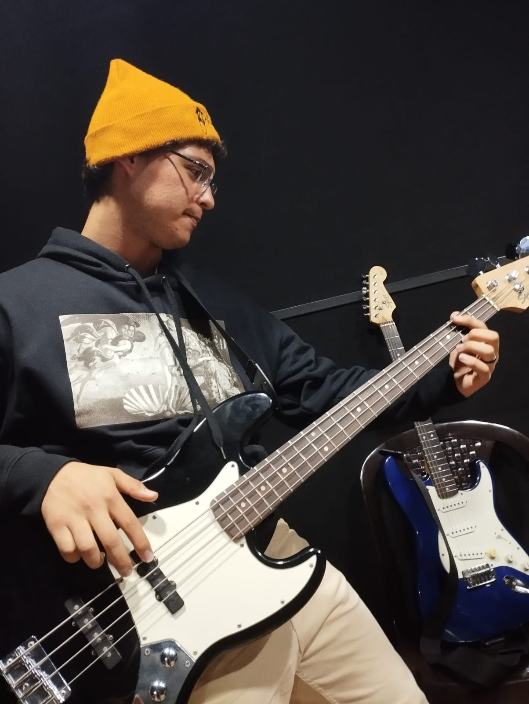

Desde joven, Alan se sumergió en el mundo del grunge, encontrando inspiración en bandas icónicas como Nirvana, Pearl Jam y Soundgarden. Este género, caracterizado por sus letras introspectivas y sonidos distorsionados, resonó con su alma creativa. La guitarra se convirtió en su medio principal para explorar y expresar estas emociones.Su pasión por la guitarra se convirtió en una parte integral de su vida. Alan no solo buscaba dominar la técnica, sino que también encontraba en las cuerdas de su guitarra una vía para liberar sus propias composiciones. Ya sea canalizando la energía frenética del grunge o explorando melodías más melancólicas, Alan creaba un espacio donde sus emociones podían fluir libremente.A medida que desarrollaba su habilidad con la guitarra, participaba activamente en la escena musical local.Ya sea tocando en pequeños conciertos o compartiendo sus creaciones en plataformas en línea, Alan buscaba conectarse con otros amantes de la música y transmitir su pasión por el grunge. Su enfoque en la guitarra no solo era técnico, sino también emocional. Cada nota, cada acorde, resonaba con la intensidad de su compromiso con la música. En su búsqueda de perfeccionar su arte, Alan se inspiraba tanto en los maestros del grunge como en sus propias experiencias y sentimientos personales. La pasión de Alan por el grunge y su dedicación a la guitarra no solo son una manifestación de sus talentos artísticos, sino también una expresión de su identidad única. A través de la música, Alan ha encontrado una forma de comunicarse con el mundo y dejar una huella duradera en la escena musical local y más allá. Su historia continúa evolucionando, y el legado que está construyendo a través de su amor por el grunge y la guitarra promete perdurar en el tiempo.